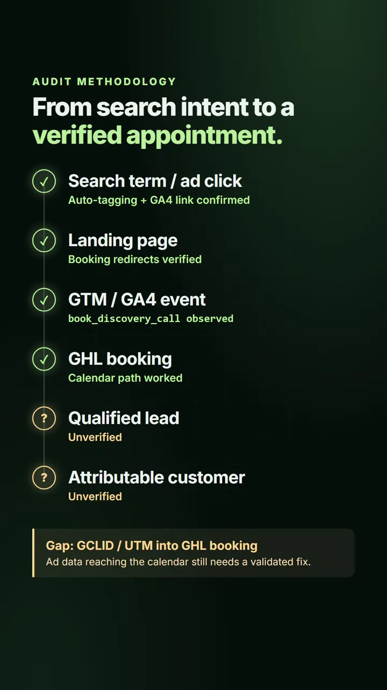

Search strategy
Researched five regional U.S. service categories and compared national demand for AI receptionist, PPC management and CRM automation using Keyword Planner forecasts.
I researched paid-search opportunities for a confidential U.S. business services client, audited its existing Search campaign and traced how ad traffic should become a measurable booking in GoHighLevel. The work connected keyword strategy with hands-on Google Tag Manager, GA4 and calendar validation before recommending additional ad spend.

Visual overview of this case study
The client is a U.S.-based business services firm offering marketing, CRM automation, websites and AI receptionist solutions. The assignment was to compare paid-search opportunities, investigate the existing campaign and establish whether a booking could be attributed to an ad click before requesting new spend.
Researched five regional U.S. service categories and compared national demand for AI receptionist, PPC management and CRM automation using Keyword Planner forecasts.
Reviewed Search terms, negative-keyword opportunities, Auction Insights, ad relevance, Quality Scores, impression-share losses and landing-page alignment.
Investigated Google Ads conversion actions, GTM and GA4 events, GHL direct-booking behavior, referral parameters and CRM-to-Ads reporting gaps.
Each step needs its own evidence. A button click or GA4 event is not proof of a completed appointment; a CRM stage is not proof of collected revenue. Full click-to-customer attribution remains unverified.
Compared regional and US-wide search demand and forecast assumptions across the client's service lines. AI receptionist service became the leading candidate for a limited national pilot, subject to offer economics, budget and owner approval. Forecasts were treated as estimates, not guaranteed leads.
Reviewed campaign performance alongside actual search-query themes, existing negatives, Auction Insights, impression-share constraints, Quality Scores and landing-page experience. The analysis helped frame whether improving the existing campaign or testing a separate service-specific campaign would be more appropriate.
Confirmed Google Ads auto-tagging and the Ads-to-GA4 account link, then observed the book_discovery_call event in GTM Preview and GA4 DebugView. This verified an event path, not that an appointment was actually booked or attributed to a Google ad.
Checked AI receptionist booking CTAs, the direct GHL calendar, booking form, staff assignment, notifications and confirmation routing. The CTAs reached the intended booking flow, but passing ad identifiers and UTM parameters into that external calendar and tying events to completed appointments still required a validated fix.
Reviewed GTM tag coverage, legacy booking-event behavior and CRM-to-Google Ads conversion diagnostics. The audit identified configuration and deduplication risks. API events reported as sent were not treated as accepted, matched or attributable Google Ads conversions.
Worked on the AI receptionist landing experience, including mobile video playback and responsive presentation, and verified updated booking redirects. Performance and end-to-end conversion reliability still needed additional QA before campaign activation.
The project produced a research-backed campaign direction, an audit of the current Search setup and a prioritized list of conversion-tracking issues that should be resolved before optimizing for bookings. Rather than reporting hypothetical revenue or mixing clicks with qualified leads, the proposal kept observed account data, forecast scenarios and unverified attribution separate.
Google Ads Search, Keyword Planner, search-query analysis, Auction Insights, campaign diagnostics, GTM, GA4, event QA and landing-page conversion review.
GoHighLevel direct booking, lead-source continuity, CRM conversion mapping, Voice AI intake, appointment validation, attribution boundaries and safe pre-launch QA.
This is a research and pre-launch QA case study, not a claim that a new campaign generated leads or revenue. Account credentials, customer information and restricted operational details are intentionally omitted.
I can help investigate search intent and campaign diagnostics, review GTM/GA4 conversion signals, and trace the booking handoff into your CRM. Recommendations are based on what the account and tests actually support.